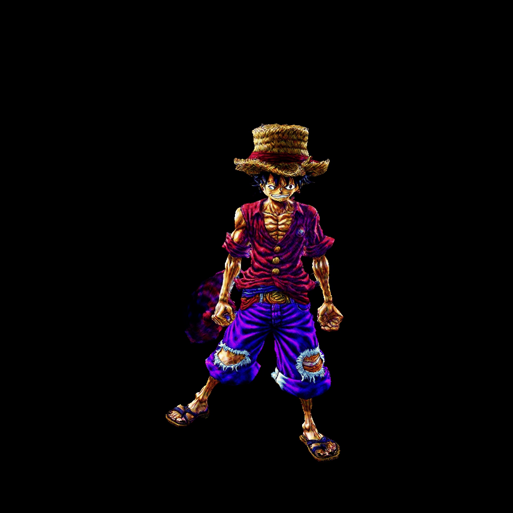
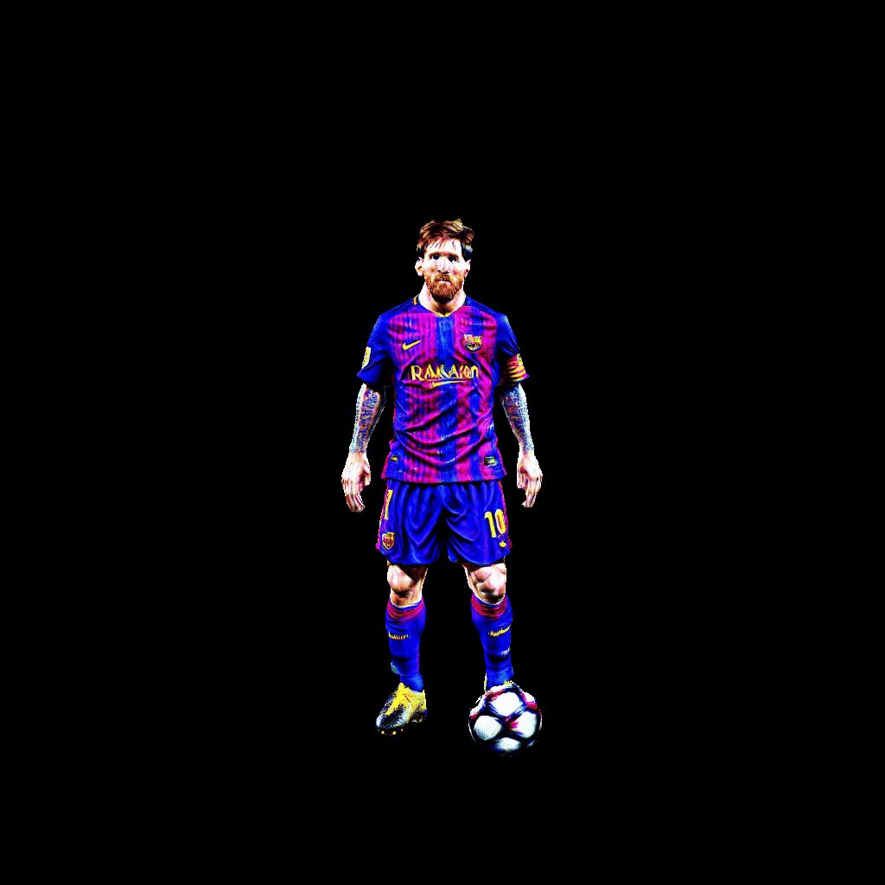
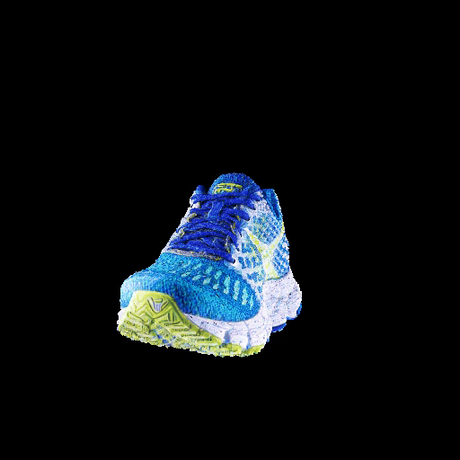
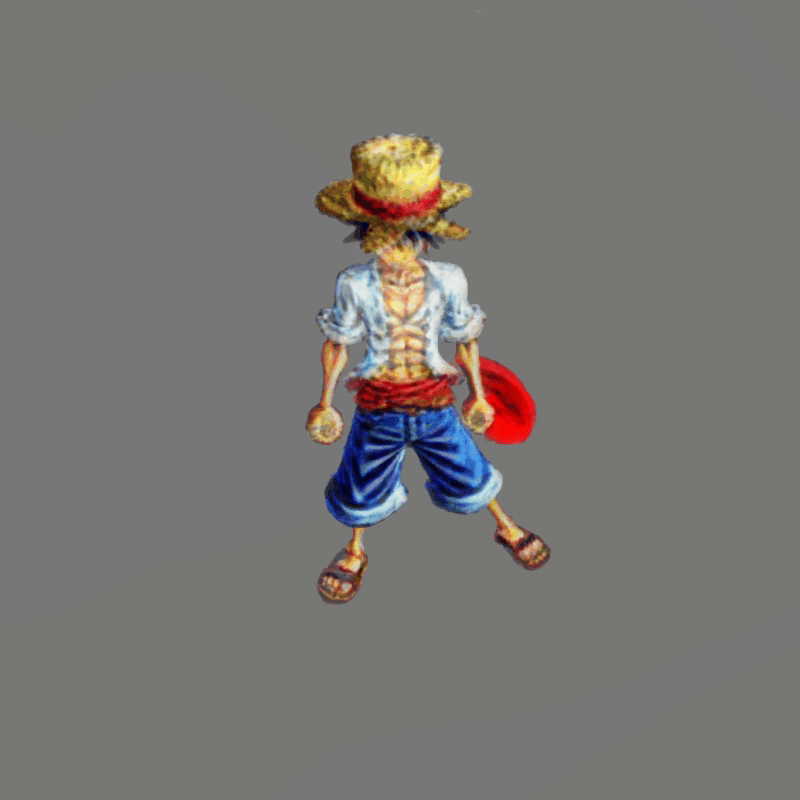

Abstract
In this paper, we study Text-to-3D content generation leveraging 2D diffusion priors to enhance the quality and detail of the generated 3D models. Recent progress Magic3d in text-to-3D has shown that employing high-resolution (e.g., 512 × 512) renderings can lead to the production of high- quality 3D models using latent diffusion priors. To enable rendering at even higher resolutions, which has the poten- tial to further augment the quality and detail of the mod- els, we propose a novel approach that combines multiple noise estimation processes with a pretrained 2D diffusion prior. Distinct from the MultDiffusion study which binds multiple denoised results to generate images from texts, our approach integrates the computation of scoring distil- lation losses such as SDS loss and VSD loss which are es- sential techniques for the 3D content generation with 2D diffusion priors. We experimentally evaluated the proposed approach. The results show that the proposed approach can generate high-quality details compared to the baselines.
Video
Generation Results
 |
 |
| A delicious croissant | A plate piled high with chocolate chip cookies |
|  |  |
| Luffy | A wooden deer standing on two seprarate wooden skateboards |
|  |  |
| Messi | A model of a house in Tudor style |
 |
 |
| A blue poison-dart frog sitting on a water lily | A giraffe |
|  | |
| A blue tulip | A sport shoe |
Controled SD
 |
 | |
| No Controled | Prompt: Luffy | Controled-SD |
Conclusion
In this paper, we have proposed a multiple noise esti- mation approach that enables memory-efficient training for 3D generation within a high-resolution rendering space. We have evaluated the proposed approach through experiments and demonstrated that the proposed approach is effective in generating high-quality 3D models with enhanced details. In addition, we have presented an entire Text-to-3D sys- tem that leverages the proposed approach and ControlNet for geometrically correct 3D content generation through 2D diffusion priors.
BibTeX
@article{wu2023hd,
title={Hd-fusion: Detailed text-to-3d generation leveraging multiple noise estimation},
author={Wu, Jinbo and Gao, Xiaobo and Liu, Xing and Shen, Zhengyang and Zhao, Chen and Feng, Haocheng and Liu, Jingtuo and Ding, Errui},
journal={arXiv preprint arXiv:2307.16183},
year={2023}
}